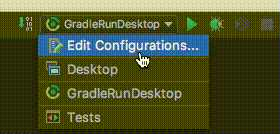

SEPR
Team: Kieran Hall, Jack Mountain, Nico Pinedo, Martynas Minskis, Joseph Leakey.
Assessment 2 Feeback!
Game Download
Get the most recent executable of our game here!
Testing Documentation
Find our detailed test report here!
User Manual
Learn how to play the game!
Promotional Presentation
Small version of the presentation to be given on the 25th of January to market our project.
Assessment 2 Documentation
This contains the updated verisions of the Assessment 1 documents.
Architecture [UML Diagram]
Checkout the full architecture in all it's UML glory.
Assessment 1 Documentation
The original Assessment 1 documentation, if you wanted to see old outdated files.
Developing with our code
Our project is split into three separate source code directories to make viewing the separation between tests and essential code very easy to do.
Deploying our code from within the environment (IntelliJ Idea) is very easy, as we have provided four RunConfigurations to speed up development. Both Desktop and GradleRunDesktop run the main game, however they access it slightly differently. Both acheieve the same effect of deploying the DesktopLauncher class. Tests simply runs all of the tests in the package, no matter where they are sourced. However our tests are only kept in the Test source code directory to make the code more readable. And finally CompileJAR takes the project in its current state and compiles it fully for you.